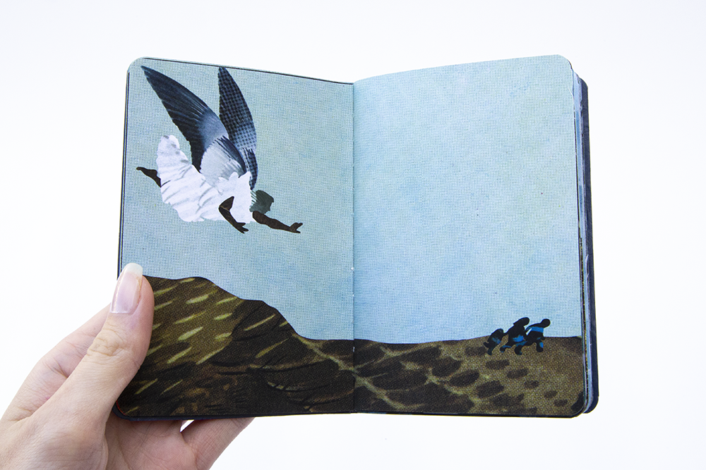
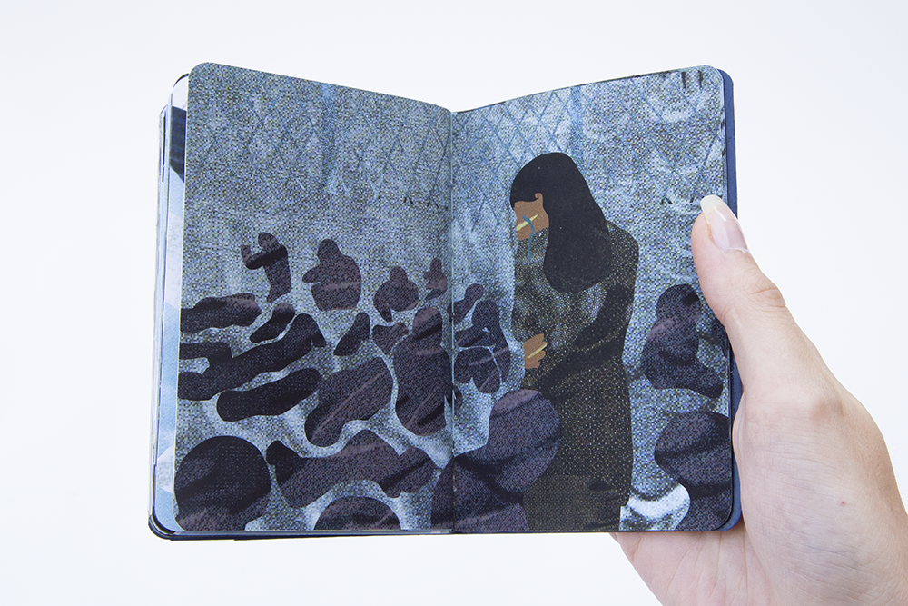
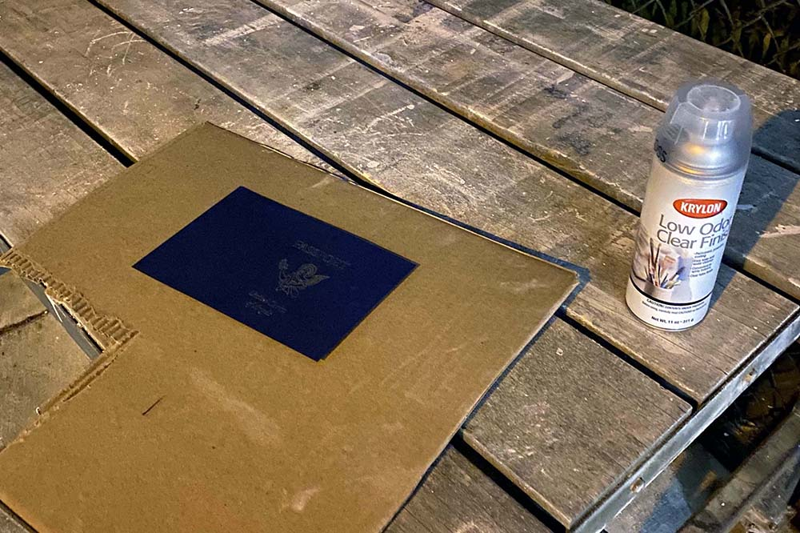

❮
❯
Fall 2021. | 24-page booklet, 4.921" x 3.465".
I detourned an illustrated 1960s catalogue of North Eastern American seabirds to create a graphic booklet addressing the harrowing journeys, experiences, and injustices presently faced by Mexican immigrants at the southern United States border.
The visual narrative I developed positions angels and saints watching and guiding the travels of immigrants crossing over to the United States. As guardians and witnesses to present-day struggles of immigration, they provide protection, question cruelty, and mourn injustice. Since all visuals in the booklet are detourned from seabirds, many of which are specialized to fly great distances in difficult weather conditions, a parallel is created between the witnesses and the actors of the journey.
By highlighting the tragedies of nation-state violence and the hostility of the landscape, this booklet is a critique of the struggles endured by immigrants at the southern United States border and a call to action for immigration reform and the abolishing of borders.
Bound in a navy blue cover foiled with gold leaf intended to resemble that of an American passport, it is an accompanying text to those in transit, symbolic of extending protection. The cover required me to employ late-night hours in the interest of self-teaching how to use a Cricut machine to foil. When I finished making the covers, I sealed the covers with a sealant spray finish to protect the foil from flaking.
Three copies of this booklet were produced, two with gold-foiled covers and one with a silver-foiled cover. One resides in the collection of the Prelinger Library, an appropriation-friendly privately-funded public library located in San Francisco.


Passport of the United Choirs of Angels is on show until june 23rd at the Thacher Gallery in Gleeson Library, University of San Francisco.